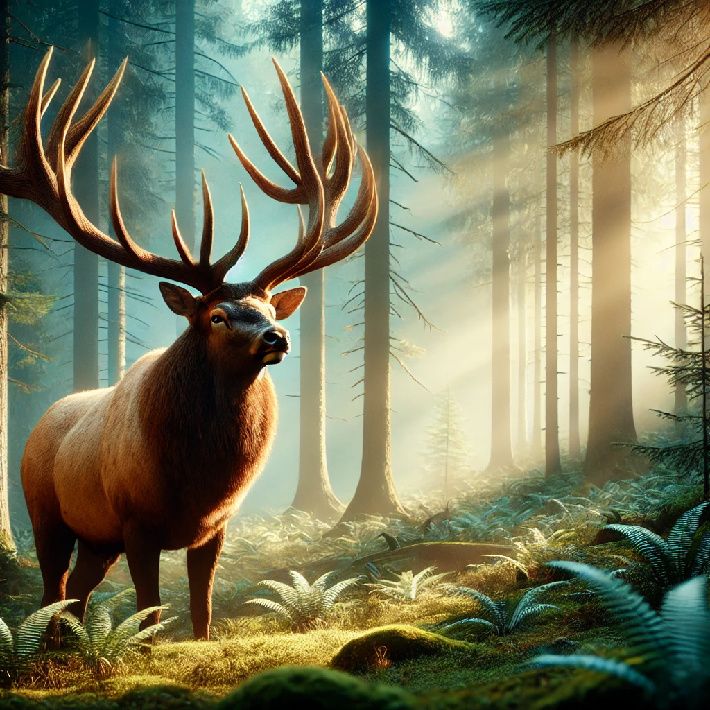
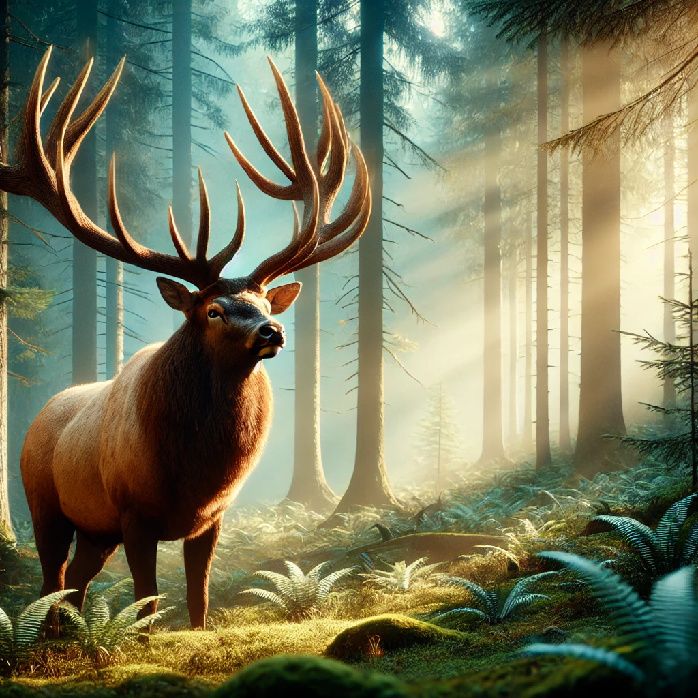

Die Wärme der Hütte war eine willkommene Abwechslung nach den Schrecken des Drachenkampfes. Anna ließ sich auf einen Stuhl fallen, ihre Hände zitterten immer noch von der Anstrengung. Der alte Mann musterte sie mit einem nachdenklichen Blick, während er an einem Schwert arbeitete, dessen Klinge in einem seltsamen, feurigen Glühen pulsierte.
„Du hast den Drachen überlebt,“ sagte er schließlich und legte das Schwert auf den Tisch. „Das ist keine Kleinigkeit. Aber dein Weg ist noch nicht zu Ende, und du wirst mehr brauchen als nur Mut.“
Anna betrachtete das Schwert. Die Klinge war glatt und elegant, mit feinen Gravuren, die wie Flammen aussahen. Ein leichter Hitzeschimmer ging von ihr aus. „Das Schwert… was macht es so besonders?“ fragte sie.
Der Mann lächelte schwach. „Dieses Schwert ist in der Lage, Flammen zu entfesseln, die selbst die dunkelsten Schatten vertreiben können. Doch es ist nicht nur eine Waffe, sondern eine Prüfung. Es wird nur demjenigen gehorchen, der es zu führen weiß.“
Anna streckte ihre Hand aus, und als ihre Finger die Klinge berührten, flackerte ein kleiner Funke auf. Sie spürte eine Wärme, die durch ihren Arm zog, und die Klinge schien sie zu erkennen. „Ich nehme es,“ sagte sie entschlossen.
Der alte Mann nickte. „Das ist gut. Du wirst es brauchen. Der Weg durch die Berge ist gefährlich, und deine Reise hat gerade erst begonnen.“
Mit dem Schwert an ihrer Seite setzte Anna ihren Weg durch die Berge fort. Der Wind wurde kälter, und die Landschaft veränderte sich. Der Schnee wich schroffen, schwarzen Felsen, und die Sonne verschwand hinter einem dichten Nebel, der die schattige Seite des Berges in Dunkelheit hüllte. Es war so still, dass Anna ihre eigenen Schritte über das Knirschen der Steine hören konnte.
Das Feuerschwert begann leicht zu glühen, als ob es die Dunkelheit spürte. Es spendete ein warmes, pulsierendes Licht, das Anna sowohl beruhigte als auch vorantrieb. „Gut, dass ich dich habe,“ murmelte sie und zog das Schwert aus seiner Scheide.
Plötzlich hörte sie ein Kratzen und ein leises, unheimliches Kichern. Aus den Schatten krochen kleine, koboldartige Wesen, ihre Augen glühten in einem giftigen Grün. Sie bewegten sich flink über die Felsen und schienen Anna umzingeln zu wollen.
„Bleibt weg!“ rief sie, doch die Wesen fauchten nur zurück und sprangen auf sie zu. Anna wirbelte herum, das Schwert erhoben. Mit einem Schwung schlug sie zu, und die Klinge entzündete sich in einer hellen Flamme. Die Kobolde wichen zurück, doch einige griffen weiter an. Mit geschickten Bewegungen konnte Anna sie zurückdrängen. Das Feuer des Schwertes brannte hell und ließ die Schattenwesen in Rauch zerfallen.
Nach einem langen Kampf gelang es ihr, den Hang weiter hinaufzuklettern. Doch als sie fast oben war, zitterte die Erde, und ein tiefes Knurren erfüllte die Luft. Vor ihr erhob sich ein riesiges Wesen, ein Schattenriese, dessen Augen wie glühende Kohlen funkelten. Seine Pranken waren wie Stein, und sein Atem war ein eisiger Hauch, der die Luft gefrieren ließ.
Anna hielt das Schwert mit beiden Händen fest und konzentrierte sich. Der Schattenriese brüllte und stürzte auf sie zu. Sie wusste, dass sie ihn nicht nur mit dem Schwert besiegen konnte. Mit einem schnellen Griff zog sie den Kristall hervor. Sein Licht flackerte, als ob es die Gefahr spürte.
„Zusammen,“ flüsterte sie, „nur zusammen können wir das schaffen.“ Sie hob das Schwert und hielt den Kristall direkt über die Klinge. Ein gleißender Strahl aus Licht und Flammen brach hervor und traf den Riesen mit voller Wucht. Der Schatten brüllte und versuchte, sich zu wehren, doch die Energie war zu stark. Der Riese löste sich in einer Wolke aus Rauch und Funken auf, und der Berg war wieder still.
Erschöpft und außer Atem erreichte Anna die Spitze des Drachenbergs. Der Wind war nun warm, und die Sonne brach durch die Wolken. Vor ihr erstreckte sich eine atemberaubende Aussicht: schneebedeckte Gipfel, grüne Täler und endlose Wälder.
Doch es war nicht nur die Landschaft, die sie in ihren Bann zog. Im Tal unter ihr sah sie eine Herde wilder Pferde, die über die Ebene galoppierten. Ein riesiger Elch stand majestätisch am Waldrand, und auf einer nahen Klippe grasten mehrere Steinböcke.
Anna wusste, dass sie ihre Reise nicht zu Fuß fortsetzen konnte. Sie brauchte einen Begleiter, der sie schneller und sicherer durch das unbekannte Land bringen konnte. Sie betrachtete die Tiere und entschied, dass sie eines davon einfangen musste, um ihre Reise fortzusetzen.
Mit einem letzten Blick auf die friedliche Szene fasste Anna neuen Mut. Die Reise war noch lang, aber mit dem Schwert, dem Kristall und der Aussicht auf einen treuen Begleiter war sie bereit, das nächste Kapitel ihres Abenteuers zu beginnen.